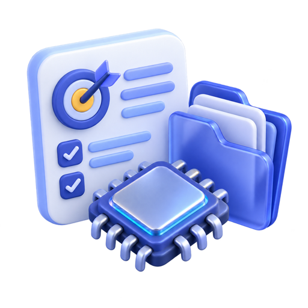
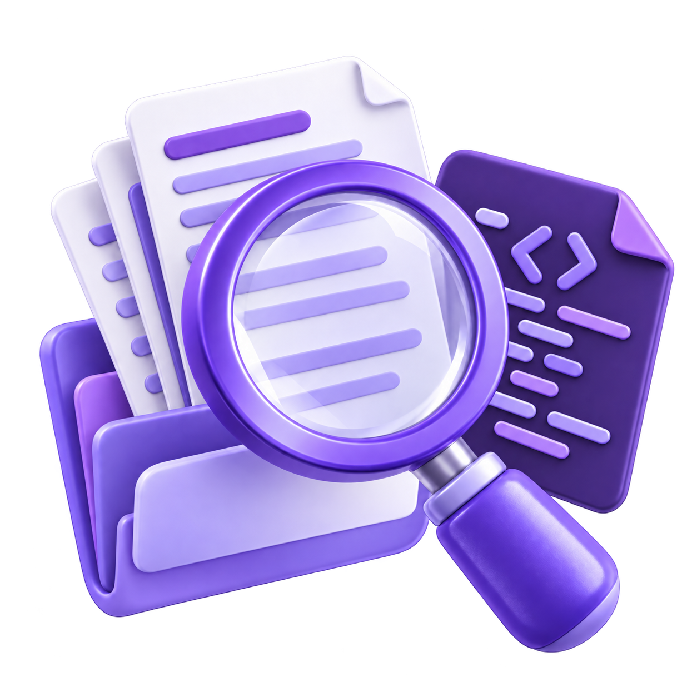
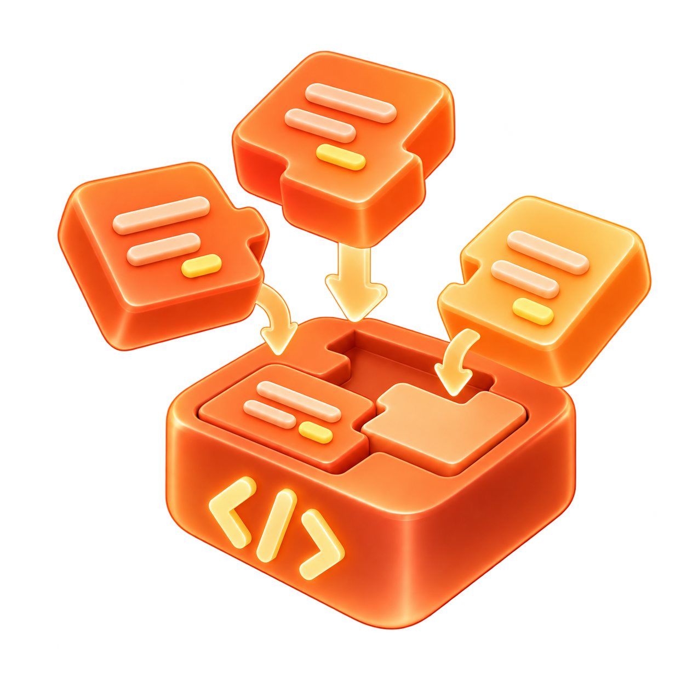
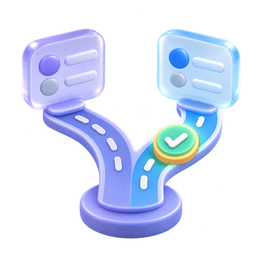
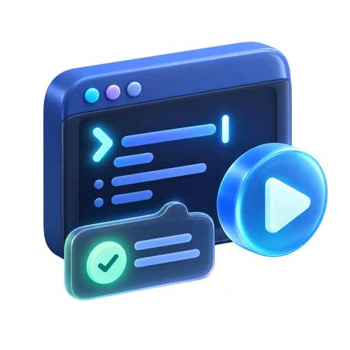

提出用 Ascend C 实现 AddCustom 并由 PyTorch / torch_npu 调用；提供目标芯片、软件版本及本机仓库线索。
基线 · 开发者主执行AI可检索并提供草稿；代码编写、本机运行、关键决策和交付主要由开发者承担。下一页 → AI接手执行
 AI DEVELOPMENT RESEARCH
AI DEVELOPMENT RESEARCH从开发者与 Agent 怎样共同完成真实任务出发，再判断平台机制、昇腾供给与学习体验应该承担什么角色。





提出用 Ascend C 实现 AddCustom 并由 PyTorch / torch_npu 调用；提供目标芯片、软件版本及本机仓库线索。
官方自定义算子教程正文未取回时，判断是否转查社区 / 第三方资料，并保留来源和版本。
检查候选工程路径、参数与来源依据；发现未满足的版本或环境条件时补充说明。
核对教程与本机版本、工程目录和生成方式，确认 msopgen 目标路径；条件不全时先补问。
检查 msopgen 目标目录与待改文件；本机命令、返回码和日志回到下一轮继续判断。
请求已经触发执行，但目标负载、优先级和完成条件可能还没有对齐。
局部用例表现改善，仍可能没有覆盖真实业务负载，或触碰未说明的精度与兼容约束。
芯片、CANN 版本、框架、Shape、dtype 与目标场景，决定资料能否迁移。
不同来源可能覆盖不同版本、硬件或任务边界。
没有范围标记与引用时，用户难判断采纳风险。
每种能力解决的问题、运行方式和权限不同。
用户需要判断选谁、怎么接、授予什么权限，以及出错时如何换路。
跨文件修改、运行工具、调整环境或重试。
任务速度可能提高，但过程信息不一定被同步看见。
不清楚从哪一步偏离、哪些副作用已经发生。
若缺少变更记录、状态和继续点，恢复可能变慢。
可以并行产生多个写法，但“看起来合理”并不等于适合合入。
证据不足时，生成速度不会自动变成交付速度。
可信结论仍待建立代码、测试或修复可能已经达到当前完成标准。
能否解释原因、适用边界、诊断步骤，并在相似任务中独立判断？
用户点了“接受”，不一定意味着他理解全部影响；建议、操作、批准和负责需要留下不同记录。
动作风险越高，越需要让用户知道谁在做什么、何时需要本人决定、结果由谁负责。
先区分用户真实目标与表面需求。
确认人与 AI 看到的是同一现场。
把收益、适用范围和代价一起说明。
一次验证一个假设，保留可复现现场。
不让单点收益掩盖边界和回退。
把个人结论转成共同可理解的经验。
要看哪些原流程被替代、哪些反馈闭环被打断，以及哪些新的任务定义、控制、验证、协作和责任问题出现。
人和 Agent 是否看到同样的问题、上下文、边界与完成标准？哪些判断仍由人做？
模型、工具、环境与知识如何被组织；用户何时能理解、确认、暂停、接管与验证？
决策、失败、修正和新经验如何被交接；下一次任务能否因此少走弯路？
模型 API 返回 final / message 只代表候选交付，不代表业务任务已经验收完成。本机未连接版本匹配的 NPU / CANN 环境，不声称完成真实硬件验证。
终端、IDE 与 GitHub 中的编码 Agent；CLAUDE.md、Skills、Subagents、Hooks、MCP 共同装配工作流。
开源 Agent Host / Harness；工具、权限、插件 Hook、上下文压缩与消息循环均可审阅和改造。
工作区型编码 Agent；AGENTS.md、Skills、Plugins、MCP、审批与沙箱围绕可审阅 diff、test、log 工作。
Agentic IDE + Cloud Agent；编辑、Shell、Browser、Rules、Skills、Subagents、Hooks 与隔离 VM 协同。
IDE / SOLO 工程模式；计划确认、工具面板、并行任务、Custom Agents、Subagents、Hooks 与 MCP 形成闭环。
面向 AI Coding 与跨应用任务交付；任务状态、成果区、Expert Team、连接器和自动化把编码工作持续推进。
要实现什么？目标设备和预期行为是什么？
查看仓库、已有样例、版本和运行环境。
决定复用什么、改哪里、先做哪一步。
按项目接口与约束形成代码变更。
构建、测试或执行工具，查看真实反馈。
分辨代码、版本、环境等原因，修正或换路。
说明变更、当前状态、已知限制和下一步。
读取现有算子结构、构建入口、目标芯片和 CANN 版本，查找可复用的 API / 样例。
假设实现用了目标版本不支持的符号。错误在构建阶段出现，但原因可能来自前面的版本判断。
带着日志与环境信息查兼容接口，做最小调整后回到构建；结果仍需按任务目标继续检查。
隐藏风险：硬件参数写死、API 版本不明、只覆盖一种数据类型。
错误不是终点，而是下一轮判断的输入。
选择“版本 + 代码”分支：查询兼容接口，保留正确部分，做最小修复。
仍不能直接宣布完成：这只是被证据修正后的新候选。
找到对的知识 × 调用对的动作 × 在对的环境验证 × 保留证据，才形成可信任务完成；最弱的一层决定平台上限。
沙盘回答“昇腾能力可以从哪个入口进入用户的 AI 工作流”，不比较模型质量，也不把平台内部存在的 Runtime 算作开发者可直接装配。
Rules、Skills、Commands 把经验包装成可发现、可复用的上下文与动作。
文件、Shell 之外，Browser、MCP、Connector 让 Agent 进入真实业务系统。
Subagents、Hooks、并行与 Cloud runtime，把一次回答变成长程执行。
工具结果已可返回，但业务完成标准、Owner、SLA 与跨工具回执仍然割裂。
目标、版本、权限、预算与完成条件。
版本边界
可信事实
历史状态
方法分支
显式入口
工程起点
任务、规则、知识、方法、历史与 tools schema。
回答、补问，或产生工具 / 委派请求。
注册能力
授权 / 沙箱
执行前后与结束检查
权限、风险、成本与工具合同共同决定是否执行。
文件、Shell、Browser
实时事实与受控动作
固定角色与工具边界
独立 Context 子任务
status、error、diff、test、log 与产物进入证据链。
环境、命令、信号与限制。
业务条件决定是否通过。
用新证据修正假设，并决定下一轮。
按时间、事件或状态再次发起
保留 Checkpoint、Owner、SLA 与未验证项。
读图方式：六个环节各有固定卡槽；Claude 的 Rules、Skill、Hook、MCP 与 Subagent 被归入对应卡槽，其他平台也必须使用完全相同的位置。
目标、范围、完成条件。
项目规则
能力方法
规则、能力描述、历史与工具定义统一装配。
回答或产生调用请求。
执行前检查
授权模式
Hook、权限与参数校验合并进入同一步。
本地动作
外部能力
独立任务
Tool、MCP 与 Subagent 被并列处理。
动作后检查
统一结果
结果与证据统一进入下一轮判断。
结束检查
上下文压缩
停止、压缩与继续被归入同一阶段。
业务完成仍由应用层判断。
读图方式：六环节、三层和颜色保持不变；节点数量与连线由 Claude 的真实机制决定，因此可以看见 Skill 延迟加载、Subagent 独立 Context 和 Hook 生命周期。
任务、权限与完成条件。
按作用域常驻
Skill / Agent 可发现
常驻规则、历史、能力描述与工具定义。
回答、调用 Skill、工具或 Agent。
方法只在需要时进入当前 Context。
answer / skill / tool / agent。
允许、修改或阻断
工具与风险边界
Host 分开处理 Tool、MCP 与 Agent。
主 Context 中执行
fork 独立 Context
工具返回 result；Subagent 返回独立任务结果。
检查工具结果
检查委派结果
tool_result、Agent result、错误与证据。
结束前允许或阻断
长 Context 压缩
结果与 Hook 决定下一轮 Context。
测试、性能或 Owner 规则判定完成。
Rules 常驻；Skill、Tool 与 Subagent 先暴露轻量描述。
CLAUDE.md · Skill index · ToolSearchSchema、值校验、Hook 与 Permission 合并决定是否执行。
validateInput · PreToolUse · allow / ask / deny安全读取可并行，有状态动作串行，相关失败可取消兄弟调用。
parallel read · serial write · cancellation排序、裁剪、PostToolUse 与 LSP diagnostics 共同塑造下一轮输入。
tool_result · diff · diagnostics · hook context参数、权限、协议、Context、容量和完成门禁走不同状态转移。
repair state before retryStop Hook 可阻断候选结束并把原因重注入；L3 再做业务验收。
candidate final → check → continue / deliver尽量在工作区改变前发现参数、权限和适用范围问题。
调度、结果配对与分型恢复降低一次错误污染后续多轮的概率。
Observation 和停止门禁共同决定再规划、升级或候选交付。
本页观点：Codex 的差异不是“自动做更多”，而是用目录指令、审批 / 沙箱和 diff / test / log 形成受控证据链。
flowchart LR
subgraph X1["1 · INSTRUCTION DISCOVERY"]
direction TB
S(["任务 + Workspace"])
DISC["01 · 指令发现
全局 → 仓库根 → 深层 AGENTS.md"]
LOAD["按需加载能力
Skill / Plugin / MCP schema"]
PLUG["Plugin package
Skill · MCP Server · App"]
S --> DISC --> LOAD
PLUG -.装配.-> LOAD
end
subgraph X2["2 · PLAN & ACTION"]
direction TB
PLAN["计划任务
目标 · 依赖 · 风险 · 验证方式"]
ACT{"下一动作？"}
PLAN --> ACT
end
subgraph X3["3 · POLICY GATE"]
direction TB
FILE["File
read / search / apply_patch"]
CMD["Command
build / test / lint / git"]
EXT["MCP / App
外部系统调用"]
POLICY{"02 · Approval policy
+ Sandbox 允许？"}
USER["请求用户授权
保留待执行动作"]
FILE --> POLICY
CMD --> POLICY
EXT --> POLICY
POLICY -->|待确认| USER
end
subgraph X4["4 · EXECUTION & EVIDENCE"]
direction TB
RUN["受控执行"]
EVID["03 · Evidence update
diff · stdout · test · log · artifact"]
REPLAN{"结果满足计划？"}
RUN --> EVID --> REPLAN
end
subgraph X5["5 · TASK ACCEPTANCE"]
direction TB
VERIFY{"Application 验收？"}
OUT(["交付变更
检查结果 + 边界"])
VERIFY -->|是| OUT
end
LOAD --> PLAN
ACT -->|文件操作| FILE
ACT -->|命令| CMD
ACT -->|MCP / App| EXT
ACT -->|候选 final| VERIFY
USER -->|批准| RUN
POLICY -->|允许| RUN
POLICY -->|拒绝| EVID
REPLAN -->|否：修复 / 换路径| PLAN
REPLAN -->|是| VERIFY
VERIFY -->|否| PLAN
classDef context fill:#eef1ff,stroke:#858bd7,color:#171a20;
classDef gate fill:#fff2df,stroke:#d3a563,color:#171a20;
classDef exec fill:#e7f7f1,stroke:#55a889,color:#171a20;
classDef task fill:#252a33,stroke:#252a33,color:#ffffff;
classDef spotlight fill:#F1FF4F,stroke:#AAB500,color:#171a20,stroke-width:2px;
class DISC,LOAD,PLUG,PLAN,EVID context; class ACT,POLICY,REPLAN,VERIFY gate; class FILE,CMD,EXT,RUN,USER exec; class S,OUT task;
class DISC,POLICY,EVID spotlight;
AGENTS.md 从全局到深层目录逐级生效，让局部工程约束靠近代码。
H · 对应 Context Pack审批策略与沙箱把自主动作变成用户可控制的风险边界。
H · 对应 Capability Contractdiff、test、stdout、log 与 artifact 支撑下一轮修复和最终审阅。
H/M · 对应 Evidence Layer本页观点：OpenCode 不证明结果一定更好，但能把工具注册、权限询问、插件事件和上下文压缩从黑箱变为工程可控变量。
flowchart LR
subgraph O1["1 · SESSION INPUT"]
direction TB
S(["Session input"])
INST["instruction.ts
Agent instruction + project rules"]
HIST["Session history
message parts / tool parts"]
TOOLSET["01 · tools.ts
Built-in + MCP + Plugin tools"]
S --> INST
end
subgraph O2["2 · PROMPT & STREAM"]
direction TB
PROMPT["prompt.ts
组装 messages / model / tools"]
STREAM["LLM.stream"]
EVT{"Processor event？"}
PROMPT --> STREAM --> EVT
end
subgraph O3["3 · PERMISSION & HOOK"]
direction TB
ASK["02 · permission.ask
Allow / Ask / Deny"]
BEFORE["tool.execute.before
Plugin hook"]
ROUTE{"工具来源？"}
ERR["tool-error part"]
ASK -->|Allow| BEFORE --> ROUTE
ASK -->|Deny| ERR
end
subgraph O4["4 · TOOL EXECUTION"]
direction TB
BUILT["Built-in
read / edit / bash / LSP / search"]
MCP["MCP tool execute"]
SUB["Task tool
General / Explore Subagent"]
AFTER["tool.execute.after
Plugin hook"]
BUILT --> AFTER
MCP --> AFTER
SUB --> AFTER
end
subgraph O5["5 · PROCESSOR STATE"]
direction TB
PART["写入 text / reasoning part"]
RESULT["tool-result / tool-error part"]
END{"finish reason / limit？"}
COMPACT["03 · Compact session
压缩后继续"]
OUT(["Session output"])
PART --> END
END -->|上下文逼近阈值| COMPACT
END -->|停止| OUT
end
INST --> PROMPT
HIST --> PROMPT
TOOLSET --> PROMPT
EVT -->|text / reasoning| PART
EVT -->|tool-call| ASK
ROUTE -->|Built-in| BUILT
ROUTE -->|MCP| MCP
ROUTE -->|Task| SUB
AFTER --> RESULT
ERR --> RESULT
RESULT --> HIST
END -->|继续| HIST
COMPACT --> HIST
classDef context fill:#eef1ff,stroke:#858bd7,color:#171a20;
classDef gate fill:#fff2df,stroke:#d3a563,color:#171a20;
classDef exec fill:#e7f7f1,stroke:#55a889,color:#171a20;
classDef task fill:#252a33,stroke:#252a33,color:#ffffff;
classDef spotlight fill:#F1FF4F,stroke:#AAB500,color:#171a20,stroke-width:2px;
class INST,HIST,PROMPT,TOOLSET,PART,RESULT,COMPACT context; class EVT,ASK,ROUTE,END gate; class BEFORE,BUILT,MCP,SUB,AFTER,ERR exec; class S,OUT task;
class TOOLSET,ASK,COMPACT spotlight;
Built-in、MCP 与 Plugin tools 在统一工具表中装配，便于审阅和替换。
H · 对应跨平台适配层Allow / Ask / Deny 及 before / after Hook 让策略和扩展点可检查。
H · 对应 Capability Contract接近阈值时压缩后继续，利于长会话工程治理；质量影响仍需测量。
H · 机制；效果为 L本页观点：Cursor 的显著差异发生在环境和连续性：工具边界可 Steering、Cloud VM 能真实运行、Checkpoint 支持恢复或用户接管。
flowchart LR
subgraph R1["1 · CONTEXT"]
direction TB
S(["Goal / Chat / Repo"])
CTX["Context build
Rules · AGENTS.md · code search"]
ADAPT["Model-adapted Agent
按模型配置 instructions + tools"]
S --> CTX --> ADAPT
end
subgraph R2["2 · PLAN & STEERING"]
direction TB
PLAN["Plan + /goal
建立 checkpoint"]
QUEUE["01 · Queued message / Steering
在 tool-call 边界进入"]
PAR{"是否委派？"}
QUEUE -.影响下一轮.-> PLAN
PLAN --> PAR
end
subgraph R3["3 · AGENT CONTROL"]
direction TB
SUB["并行 Subagents
Explore / Bash / Browser / Custom"]
HOOK["Pre-tool Hook / Permission"]
RUNTIME{"运行位置？"}
SUB --> HOOK --> RUNTIME
end
subgraph R4["4 · DUAL RUNTIME"]
direction TB
LOCAL["Local IDE
Edit · Shell · Search · Browser · MCP"]
CLOUD["02 · Cloud Agent / 隔离 VM
build · test · browser / desktop"]
POST["Post-tool / File / Shell / MCP Hook"]
LOCAL --> POST
CLOUD --> POST
end
subgraph R5["5 · EVIDENCE & RECOVERY"]
direction TB
EVID["Evidence
diff · test · screenshot · video · log · PR"]
GOAL{"目标与验证满足？"}
CHOICE{"03 · 继续、回到 checkpoint
或用户接管？"}
STOP["Stop Hook / Review"]
OUT(["交付并允许继续 steering"])
EVID --> GOAL
GOAL -->|否| CHOICE
GOAL -->|是| STOP --> OUT
end
ADAPT --> PLAN
PAR -->|是| SUB
PAR -->|否| HOOK
RUNTIME -->|Local IDE| LOCAL
RUNTIME -->|Cloud Agent| CLOUD
POST --> EVID
CHOICE -->|继续| PLAN
CHOICE -->|回滚| CTX
classDef context fill:#eef1ff,stroke:#858bd7,color:#171a20;
classDef gate fill:#fff2df,stroke:#d3a563,color:#171a20;
classDef exec fill:#e7f7f1,stroke:#55a889,color:#171a20;
classDef task fill:#252a33,stroke:#252a33,color:#ffffff;
classDef spotlight fill:#F1FF4F,stroke:#AAB500,color:#171a20,stroke-width:2px;
class CTX,ADAPT,PLAN,QUEUE,EVID context; class PAR,HOOK,RUNTIME,GOAL,CHOICE,STOP gate; class SUB,LOCAL,CLOUD,POST exec; class S,OUT task;
class QUEUE,CLOUD,CHOICE spotlight;
Queued message 在下一轮规划前进入，降低长任务偏离后只能全部重来的风险。
H · 对应跨工具控制体验构建、测试、浏览器和桌面环境能产生截图、视频、日志与 PR 证据。
H · 对应 Trusted Execution继续、回到 Checkpoint 或用户接管，让失败现场不必完全丢失。
H/M · 对应 State Transition本页观点：Trae 的产品化重点是控制感：执行前确认计划，执行中通过 Tool Panels 看动作，结束前通过 Preview / Hook 检查结果。
flowchart LR
subgraph T1["1 · SESSION & CONTEXT"]
direction TB
S(["Goal + Project"])
START["SessionStart Hook"]
CTX["Context
Rules · code · docs · chat"]
PROMPT["UserPromptSubmit Hook"]
S --> START --> CTX --> PROMPT
end
subgraph T2["2 · PLAN CONFIRMATION"]
direction TB
PLAN["Built-in Agent
生成 actionable plan"]
CONF{"01 · 用户确认计划？"}
ROUTE{"执行编排？"}
PLAN --> CONF
CONF -->|修改| PLAN
CONF -->|确认| ROUTE
end
subgraph T3["3 · AGENT & HOOK"]
direction TB
CUSTOM["Custom Agent
模型 / Tools / MCP"]
SUB["Subagents
独立上下文并行执行"]
PRE["PreToolUse Hook"]
CUSTOM --> PRE
SUB --> PRE
end
subgraph T4["4 · TOOL PANELS"]
direction TB
PANEL{"02 · Tool Panel / Action"}
EDIT["Editor
代码与文件变更"]
DOC["Docs
文档查看 / 引用"]
WEB["Browser
浏览与页面验证"]
EXT["Command / MCP
命令与外部服务"]
POST["PostToolUse Hook"]
PANEL --> EDIT --> POST
PANEL --> DOC --> POST
PANEL --> WEB --> POST
PANEL --> EXT --> POST
end
subgraph T5["5 · PREVIEW & ACCEPTANCE"]
direction TB
VIEW["DiffView + Preview + Result"]
STOP["03 · Stop Hook
可自动执行验收测试"]
OK{"完成条件满足？"}
OUT(["任务交付 / 并行任务汇总"])
VIEW --> STOP --> OK -->|是| OUT
end
PROMPT --> PLAN
ROUTE -->|主 Agent| PRE
ROUTE -->|Custom Agent| CUSTOM
ROUTE -->|Subagents| SUB
PRE --> PANEL
POST --> VIEW
OK -->|否：修订 / 恢复| PLAN
classDef context fill:#eef1ff,stroke:#858bd7,color:#171a20;
classDef gate fill:#fff2df,stroke:#d3a563,color:#171a20;
classDef exec fill:#e7f7f1,stroke:#55a889,color:#171a20;
classDef task fill:#252a33,stroke:#252a33,color:#ffffff;
classDef spotlight fill:#F1FF4F,stroke:#AAB500,color:#171a20,stroke-width:2px;
class CTX,PROMPT,PLAN,VIEW context; class START,CONF,ROUTE,PRE,PANEL,POST,STOP,OK gate; class CUSTOM,SUB,EDIT,DOC,WEB,EXT exec; class S,OUT task;
class CONF,PANEL,STOP spotlight;
用户可修改再确认，减少 Agent 在错误目标上进行高成本动作。
H · 对应路径解释与授权编辑、文档、浏览器、命令与 MCP 具有明确执行位置和结果入口。
H · 对应 Trusted ExecutionDiffView、Preview 和 Stop Hook 让交付前检查成为显式环节。
H · 对应 Evidence Layer本页观点：WorkBuddy 的参考价值不在代码能力排名，而在调用前确认多 Agent 成本、执行中呈现状态、结束后保留 Results 并继续处理。
flowchart LR
subgraph W1["1 · TASK CONTEXT"]
direction TB
S(["一句话目标"])
AUTO["Automation
时间规则 + 模型 + Skill"]
CTX["工作目录 Context
文件 · 截图 · Rules · Memory"]
PLAN["状态：规划中
拆解步骤与预期产物"]
S --> CTX --> PLAN
AUTO -.触发.-> CTX
end
subgraph W2["2 · COST-AWARE ROUTING"]
direction TB
MODE{"执行模式？"}
COST{"01 · 确认多 Agent 成本？"}
ONE["单 Expert
人设 + 方法 + 工具链"]
MODE -->|单 Expert| ONE
MODE -->|Expert Team| COST
COST -->|否| ONE
end
subgraph W3["3 · EXPERT TEAM"]
direction TB
LEAD["团长 Agent
拆任务 / 分派 / 汇总"]
E1["Expert A 并行任务"]
E2["Expert B 并行任务"]
E3["Expert C 并行任务"]
LEAD --> E1
LEAD --> E2
LEAD --> E3
end
subgraph W4["4 · CROSS-APP EXECUTION"]
direction TB
EXEC["Skills + Connector / MCP
文件与跨应用动作"]
STATE{"02 · 执行状态？"}
WAIT["待处理
保留现场并通知用户"]
FAIL["失败
日志与产物仍进入结果区"]
DONE["已完成"]
EXEC --> STATE
STATE -->|需授权 / 信息| WAIT --> EXEC
STATE -->|失败| FAIL
STATE -->|完成| DONE
end
subgraph W5["5 · RESULTS & CONTINUATION"]
direction TB
RESULT["03 · Results
产物 · 全部文件 · 变更 · 预览"]
NEXT{"下一步？"}
ARCH(["已归档 / 可复用任务"])
RESULT --> NEXT -->|归档| ARCH
end
PLAN --> MODE
COST -->|是| LEAD
ONE --> EXEC
E1 --> EXEC
E2 --> EXEC
E3 --> EXEC
FAIL --> RESULT
DONE --> RESULT
NEXT -->|继续处理| PLAN
classDef context fill:#eef1ff,stroke:#858bd7,color:#171a20;
classDef gate fill:#fff2df,stroke:#d3a563,color:#171a20;
classDef exec fill:#e7f7f1,stroke:#55a889,color:#171a20;
classDef task fill:#252a33,stroke:#252a33,color:#ffffff;
classDef spotlight fill:#F1FF4F,stroke:#AAB500,color:#171a20,stroke-width:2px;
class CTX,AUTO,PLAN,RESULT context; class MODE,COST,STATE,WAIT,NEXT gate; class ONE,LEAD,E1,E2,E3,EXEC,FAIL,DONE exec; class S,ARCH task;
class COST,STATE,RESULT spotlight;
Expert Team 启动前确认成本，说明多 Agent 不是无条件默认升级。
H · 对应成本与升级门槛授权、补信息或失败不会消失在消息流中，现场仍可继续推进。
H · 对应 State Transition产物、全部文件、变更与预览进入 Results，可继续处理或归档复用。
H · 对应 Evidence Receipt任一乘数接近 0，整体能力都会坍塌；成本与摩擦则决定这套能力能否被持续使用。
这些解释用于形成实验变量，各因素的因果贡献由同任务实验测量。
差距集中于版本锁定、最小命令、验证信号和失败恢复路径的连续性。
构建兼容 6、应用交付 5、正确性性能 4。
仍有 6 个样本未在公开描述中清晰携带版本。
硬件上下文更容易在求助与转述中丢失。
问题不只在 AI 能否找到资料，而在找到后能否按版本 / 硬件判断适用性、运行前预检，并在使用后返回验证证据与下一动作。本样本不代表生态总体解决率。
把 API、参数、错误码、算子、样例和兼容矩阵作为最小检索单元。
元数据携带 CANN、芯片、OS、框架、范围、失效版本与原文锚点。
环境指纹、依赖、权限、算力与预计成本先被机器检查。
返回 status、命令、日志、产物、版本、验证者与下一动作；冲突知识自动降权。
flowchart LR A(["已表达
目标进入任务会话"]) --> C{"上下文够用？
版本 · 硬件 · 环境"} C -->|否| M["待补上下文
用户或 AI 补充"] --> C C -->|是| P["已生成路径
来源 · 风险 · 成本"] --> X["执行中
工具 / 服务 / 专家"] X --> G{"下一步由谁处理？"} G -->|需要授权或选择| U["待用户处理"] --> X G -->|高不确定性 / 服务失败| O["待 Owner / 专家
SLA 可见"] --> X G -->|证据不足| R["恢复 / 换路径
保留现场与成本"] --> P G -->|满足完成条件| V["已验证
证据满足验收"] --> K(["已回流
知识 / Issue / PR"]) classDef context fill:#eef1ff,stroke:#858bd7,color:#171a20; classDef gate fill:#fff2df,stroke:#d3a563,color:#171a20; classDef exec fill:#e7f7f1,stroke:#55a889,color:#171a20; classDef task fill:#252a33,stroke:#252a33,color:#ffffff; class A,M,P context; class C,G gate; class X,U,O,R exec; class V,K task;
保留环境、日志、已尝试动作和成本，允许 AI 继续、换路径或升级专家。
从 Cursor / Claude Code / Codex 切到社区或 NPU 服务时，Task Envelope 不丢失。
业务任务用测试、性能、产物或 Owner 规则判定，而不是 API 是否返回 final。
MCP、Skill、API、CLI、网页和专家都是交付通道；真正要统一的是目标、能力合同、执行证据与问题状态。
服务不需要知道用户来自哪个 Agent；只要能接收任务现场、声明能力边界并返回可验证结果。
目标、仓库/文件、CANN、芯片、OS、框架、预算、权限、已尝试动作与日志。
INPUT · PORTABLE STATE能解决什么、输入 schema、前置条件、成本、时延、权限、停止条件与失败语义。
DISCOVERY · EXECUTIONstatus、命令、环境、日志摘要、产物、测试/指标、来源、时间、验证者和下一动作。
OUTPUT · TRUST由哪一方把问题从何状态推进到何状态；失败、待处理和升级也必须结构化。
ORCHESTRATION · SLA交付通道可多样： MCP 适合在线工具调用，Skill 适合方法与脚本装配，API / CLI 适合稳定系统动作，网页适合人工审阅，专家服务处理高不确定性。合同不应绑定单一通道。
设计的对象从单页信息架构扩展为跨工具任务连续性。
根据任务状态匹配知识、检查、运行或专家能力，并决定何时停止或升级。
资料、平台、开发、测试和支持团队不只“提供入口”，还要承诺适用范围与服务等级。
每次任务产生的采用、失败、验证和回流信号，反向改进知识与服务供给。
目标 + 环境 + 当前状态 + 已尝试动作 + 成本 / 权限 + Owner + 完成条件 + Evidence Receipt；体验部定义可理解、可判断、可恢复的任务模型，各服务 Owner 对真实供给与验收负责。
先用低成本证据缩小不确定性，再调用昂贵运行、NPU benchmark 或专家能力。当前只定义相对成本与升级规则，实际 Token、队列、算力和专家单价需通过试点测量。
版本、硬件、依赖、权限不匹配时，不启动昂贵构建。
文档引用 → 静态检查 → 容器测试 → NPU 验证 → 专家介入。
调用前展示预计 Token、队列、算力、时延与可能产物。
命中已验证 recipe / receipt 时，减少重复推理和运行。
核心指标是 cost per verified task，不是单次调用成本。
用户从任何 AI 工具进入同一个任务会话；社区、文档、开发工具、验证平台和专家服务不争夺对话入口，而是共同提供可信路径、状态、Owner 和证据。
设计对象不只是一个聊天入口或最终验收页，而是任务开始前的对齐、过程中的理解与控制、失败后的接手与恢复，以及任务结束后把关键依据转化为可回看的学习材料。
呈现目标、环境、方案依据和行动影响；信息不足时补问，风险不清时先停下来确认。
让用户看见当前进展、证据和下一步；失败时保留现场，让人能接手、换路或继续。
区分练习、修改和项目验证状态；把有用的解释与经验留在任务中，供开发者回看和迁移。
体验部负责：定义任务中的用户问题、交互与控制边界 · 协同团队负责：提供知识、运行能力、验证规则与真实证据
不替代模型、Harness 或领域 Owner 的职责；体验设计把后台机制转化为用户看得懂、能引导、可介入、可接手的协作过程。
把目标、环境、约束和完成标准放进同一任务上下文；信息不足时能补问。
看见它为什么选这条方案、依赖什么知识与能力，以及接下来会影响什么。
按风险提供确认、暂停、纠偏、接管、换路与继续处理的时机。
呈现证据与未验证边界，让 Review、后续维护和知识学习能接续。
任务、规则、知识、方法与历史
理解、拆解、工具与委派选择
schema、参数、权限、风险与成本
文件、Shell、Browser、MCP、Agent
result、diff、test、log 与证据
换路、Checkpoint、状态与升级
本页是从已观察到的平台机制推导的体验假设，不是同任务效果对比或平台能力排名。
多个平台都有 Rules、Skill、Subagent 与 MCP。真正需要隔离的是：模型是否更擅长工具化编码、默认 Host 是否更会组织现场、执行结果是否更容易驱动下一轮。
代码推理、跨文件一致性、工具选择和失败恢复能力；训练与联合调优细节未公开，因此当前只能作为 L 级解释。
基线解释力：高System Prompt、工具 schema、Context 选择 / 压缩、计划与重规划、权限和停止策略共同决定模型每轮看到什么、能做什么。
基线解释力：高文件、Shell、测试、日志和 diff 的返回粒度影响模型能否识别失败、修改假设、选择下一动作并形成证据。
基线解释力：中高CLAUDE.md、Skill、Subagent、Hook 与 MCP 能强化领域约束；只有被配置和触发后才可能产生增益。
条件增益尚未执行 · 工作区未改变
字段形态、必填项、枚举
validateInput 检查路径、范围与语义
项目策略可改写、补充、询问或阻断
工具权限、风险与用户授权
排序 / 裁剪 / Post Hook → 下一轮
返回字段、路径或范围问题
原因和补充 Context 一起回填
呈现副作用、风险与范围
保留现场，不进入执行器
Skill 与延迟工具先只暴露名称、用途和轻量描述。
知道“有什么”，不先装入全部正文按任务加载完整 Skill、JSON Schema、允许工具与 Hook。
把预算留给当前需要的方法和能力Fresh / Fork Agent 使用独立 Tools、Permission 与 Memory 边界。
隔离原始输出，按选择继承任务语境限制单条结果，再做 snip、microcompact 与 granular collapse。
尽量保留细粒度现场保护 tool_use / tool_result 配对；连续失败触发熔断。
先保协议完整，再释放大块预算重附 Skill、工具、Plan、关键 Hook Context 和最近消息。
恢复“还能做什么、必须遵守什么”读取错误类型、当前状态与停止条件，选择最小恢复协议
每种故障只修复必要状态，并明确保护工作区、协议、任务连续性或完成语义。
CLASSIFY → MINIMUM REPAIR ≠ BLIND RETRY规则 → Schema → 值校验 → Hook → Permission，使错误更早暴露。
读取并行、写入串行、相关失败取消，兼顾速度与状态一致性。
排序、裁剪、Hook 与 LSP 回注，让主要错误更容易驱动重规划。
Synthetic result、tombstone 与 fallback 清理减少异常污染。
默认验证要求与 Stop Hook 降低“生成代码即完成”的误判。
错误更早暴露 · 动作较少互相污染 · 反馈可判断 · 异常可恢复 · 结束有门槛
版本、芯片、权限、前置条件和拒绝条件没有统一合同。
名称 / 用途索引、Task / State Trigger、完整 JSON Schema、validate rules、权限级别、成功 / 拒绝示例与 Owner。
误触发、无效参数和盲目重试减少
Agent 不知道哪些可并行、哪些必须串行、失败应取消谁。
read-only / stateful 分类、资源锁、并发组、依赖、超时、幂等、回滚、取消传播与成本上限。
状态冲突、重复运行和资源浪费减少
主要错误、环境、证据行和下一动作需要 Agent 自行猜测。
status、environment、primary_error、evidence_lines、diff、metrics、artifacts、cost、next_actions 与 evidence_id。
主错误命中、换路成功和证据复用提升
任务现场、工具配对和已验证事实在跨工具继续时容易丢失。
错误分类、状态转移、可重试 / 不可重试、补偿动作、保留字段、压缩后重注入清单与专家升级条件。
重复诊断、死循环和上下文丢失减少
测试、性能、NPU 结果、未验证项和成本停止条件没有进入同一完成判断。
Skill 内含 Inputs、Branches、Allowed Tools、Expected Signal、Stop / Continue、Escalation；Gate 汇总测试、性能、产物、风险与预算。
Verified Completion、首次验证时间与单次可信完成成本
这些能力不要求用户改用 Claude Code：同一领域控制面可通过 Rules / Skill、MCP、Plugin、API / CLI 或网页服务适配 Claude、Codex、Cursor 等工具；差异只在装配入口，不在资产语义。
环境指纹、仓库现场与已尝试动作
版本、硬件、原文锚点与冲突关系
状态触发、分支、停止与恢复方法
预检、构建、测试、Profiling 与 NPU
状态、产物、成本、Owner 与验收证据
文档仍是人类审阅界面，但不再是唯一供给单元。Agent 实际消费的是 Knowledge Unit、Skill 和 MCP Tool；它们共享版本、硬件、适用范围、来源、拒绝条件和证据状态。
官方文档、代码、样例、兼容矩阵、Issue、测试与专家规则；保留原文锚点和 Owner。
拆成最小知识单元，补齐版本 / 芯片 / 框架范围，识别冲突、替代、失效和缺失字段。
解释型内容发布为 Knowledge Unit；程序化方法发布为 Skill；实时查询和真实动作发布为 MCP / API。
根据 Task Envelope、风险、权限与成本选择静态上下文、Skill、MCP、CLI 或专家，而非固定入口。
采集采用、拒绝、失败、验证、成本与人工接管信号；回写适用范围、可信度、Owner SLA 和退役状态。
{
identity: asset_id / type / owner,
scope: CANN / Driver / chip / OS /
framework / scenario,
trigger: task_state / error_signature,
claim: action / explanation / constraint,
preconditions: required facts + permissions,
procedure: command / schema / expected signal,
provenance: source_url / anchor / reviewed_at,
verification: tested_on / receipt / confidence,
relations: conflicts / supersedes / fallback
}这不是把整页文档切成向量块；每个单元都必须能够回答“为什么适用、依据在哪、什么时候失效、怎样证明执行成功”。
稳定 ID、知识类型、领域 Owner、审核 SLA；能追踪谁负责更新和解释。
CANN、Driver、芯片、OS、框架、场景；范围不明时返回 unknown，不猜测适用。
目标、错误签名、缺失字段和前置条件；决定何时检索、何时补问、何时拒绝。
给 Agent 可执行的最小动作、参数、命令和 Expected Signal，而不是只有概念描述。
原文锚点、测试环境、Evidence Receipt、可信度和最近验证时间。
旧版本、冲突条目、替代路径、失效条件；自动避免把过期知识继续喂给 Agent。
产出：环境指纹、兼容判断、缺失项和最小预检回执
产出：错误分类、证据定位、候选修复、复跑日志和 diff
产出：基线、误差位置、算子 / 数据证据、下一步隔离路径
产出：工作负载、Profile、热点、前后对照和停止原因
产出：API / 算子映射、缺口、风险、分段计划与验收条件
ascend.resolve_environment读取芯片、CANN、Driver、OS、框架和仓库现场。
ascend.search_knowledge按任务与 Scope 返回知识单元、引用、冲突和替代。
ascend.check_compatibility判断目标与环境是否兼容；返回 compatible / blocked / unknown。
ascend.run_preflight执行最小环境预检，列出缺失项与修复前置条件。
ascend.diagnose_log解析日志与错误签名，关联版本化知识和取证动作。
ascend.fetch_minimal_sample拉取匹配版本 / 芯片的最小样例与 Expected Signal。
ascend.build_and_test在指定环境构建与测试；回传命令、日志、产物和状态。
ascend.profile_workload按工作负载采集 Profile，返回热点与基线对照。
ascend.validate_on_npu进入受控 NPU 队列验证；显式展示成本、时延与权限。
ascend.create_diagnostic_bundle打包环境、命令、日志、diff、已尝试动作和未决风险。
ascend.open_support_case携带 Task Envelope 与证据升级给 Owner / 专家。
ascend.get_case_status读取处理状态、SLA、请求补充和可继续动作。
{ status, scope_match, citations, commands, logs, artifacts, cost, confidence, next_actions, evidence_id }所有工具都返回 Receipt目标、环境、版本、仓库、错误、已尝试动作、权限与预算。
字段是否完整？是否命中版本 / 芯片范围？冲突是否可解释？
按风险和成本逐级确认；记录命令、输入、变更和运行环境。
Expected Signal 是否出现？Scope 是否一致？结果是 verified、partial、blocked 还是 unknown？
返回候选结果、下一动作；不足则换路径、补资料或携证据进入 Owner / 专家。
采用、误触发、无匹配、执行失败、人工修正、验证通过和成本信号，驱动知识范围修订、Skill 版本升级、MCP 权限调整和过期资产退役。
不是把聊天记录直接“沉淀成知识”知识真实性、构建平台和 NPU 服务仍由领域 Owner 负责；体验部负责任务模型、触发与授权体验、回执语义、跨工具连续性和评测方法。
以环境、构建、精度、性能、迁移等真实状态组织供给；明确每种状态需要补哪些字段。
定义何时只给知识、何时启动 Skill、何时调用 MCP、何时必须拒绝或升级专家。
让版本范围、引用、可信度、冲突、拒绝原因和下一动作在 Claude / Codex / Cursor 中语义一致。
区分只读、本地检查、工作区修改、远端构建、NPU 与专家；行动前展示影响、预算和撤回方式。
统一 verified / partial / blocked / unknown，设计缺证据、无匹配、超预算和 Owner 接管时的恢复路径。
持续测适用命中、Skill 触发、MCP 成功 / 拒绝、证据完整、恢复与单位可信完成成本。
每个平台只负责把 Task Envelope 送入，并把授权、状态与回执呈现给用户。
这条知识是否适合我的版本、芯片与框架？
来源 · Scope · 冲突 / 失效范围为什么选择这条路，还有哪些替代和停止条件？
选择依据 · 备选路径 · 风险会修改什么、花多少成本，能否撤回或接管？
权限 · 成本 · Action Preview失败现场是否保留，下一步由谁继续处理？
Checkpoint · Owner / SLA · 换路到底完成了什么，凭什么可以相信？
Evidence Receipt · 业务条件先判断知识与能力能否用于当前环境；缺少关键字段时先补问，不直接进入动作。
CANN 8.0.RC3 · Atlas A2 · PyTorch 2.1
官方来源版本匹配1 条冲突把选择依据、替代路径、风险和停止条件一起呈现，让用户知道为什么不是另一条路。
A · 先预检再迁移 低风险 / 约 8 min
B · 直接构建 快，但环境失败成本高
在执行前呈现权限、副作用、时间、算力与撤回方式；高风险动作必须允许人工接管。
将写入 3 个文件 · 使用 NPU 约 12 min
查看 Diff限制预算可撤回API final / Host stop 只代表本轮停止，不代表业务完成。
环境、参数、权限、容量、精度或服务异常。
环境、已尝试动作、日志、产物与有效结论。
明确下一动作与接管者。
RECOVERING · OWNER / SLA命令、日志、测试、指标、产物、引用与成本。
任务层验证正确性、性能、交付物和未决风险。
完成状态与依据绑定。
VERIFIED / PARTIAL / BLOCKED / UNKNOWN六个平台机制、完整能力矩阵、权限与环境差异、昇腾能力断点，以及 Claude Code 机制下钻。
任务与开发者旅程、CANN × CUDA AI 可用性证据、开发中学习的完整设计页，以及官方文档、开源实现与 H / M / L 边界。
Agent 能定位相关知识，而不是只看到页面入口。
内容结构清楚，关键步骤和字段不丢失。
适用条件、版本和上下文说得明白。
结论能回到明确来源与原文位置。
有预期信号、结果和适用边界。
这五项原则描述的是知识如何进入 Agent 的工作；Harness 再负责把它放到合适的任务时机，并连接到行动与证据。
开发者是否理解“为什么这样改、适用于什么条件、下次如何判断”，是任务结束后仍需设计的问题。
代码、运行结果或修复已经交付。
关键依据、适用条件和修改影响能被理解。
遇到相似问题时，能更快判断或继续处理。
 01 · NOTICE发现问题
01 · NOTICE发现问题从错误日志与代码现场发起解释或修复。
 02 · OPEN展开学习
02 · OPEN展开学习保留原任务，明确学习内容与原文件的边界。
 03 · PRACTICE安全跟练
03 · PRACTICE安全跟练在副本中修改和验证，不把练习当成交付。
 04 · APPLY审阅变更
04 · APPLY审阅变更把理解转成 Diff，用户确认后才写入项目。
 05 · RETURN回到任务
05 · RETURN回到任务重新验证原项目，并保留可恢复的学习记录。
ENTRY · B1入口绑定当前问题日志、代码和实际／预期形状一起保留；学习、直接修复或关闭由用户选择。
CONTEXT · B2原任务保持可见学习是任务中的一段活动，原文件与学习副本身份分开呈现。
PRACTICE · B3先在副本里理解练习修改、运行和结果都留在隔离范围，不冒充项目验证结果。
APPLY · B4先审阅差异，再决定是否应用练习结果放在 Diff 旁解释；取消、确认和折叠学习材料彼此独立。
RETURN & VERIFY · B5回到原项目重新验证验证使用项目修改后的文件；学习内容可收纳恢复，完整推理仍需继续运行。
环境、算子、模型、精度、性能、迁移等方法与脚本。
产品、版本、文档、安装、故障、样例与仓库读取。
目录、描述和严格工具 Schema 已存在。
Skill + MCP成熟 Skill 有前置检查，版本工具提供部分事实。
部分覆盖Skill 可携带脚本；MCP 当前全部只读。
依赖各平台 Host日志、Markdown 和产物格式分散。
缺统一回执缺共享检查点、故障分类与 Owner。
控制链中断缺跨能力、跨平台的业务完成门禁。
控制链中断两类现有资产已经接入任务前半程；从执行结果到业务完成的后半程，还没有被同一条状态与证据链连接。
ASSETS ≠ VERIFIED TASK第三方生态与专项场景，占全部 Skill 的 46.1%
环境、安装、精度、性能；代表 ascendc-env-check、ops-profiling
官方插件封装与分发入口
模型适配与开发知识
统一入口、严格输入 Schema、异常包装与查询降级；当前均属于只读能力。
定位文档结构和正文
read_llms_txtlist_productslist_versionsget_doc_tocget_doc_contentsearch_docs浏览、下载和排障
browse_docssearch_troubleshootingget_latest_versionget_download_optionsget_install_commandslist_pdf_downloads版本、结构与代码片段
get_version_announcementssearch_docs_in_productget_doc_outlineget_code_samplesget_popular_docs仓库检索和文件读取
search_reposlist_repo_filesget_repo_filerepo-index / tree / keywordsMarkdown 适合人和模型阅读，但还不足以直接改变任务状态。
{ content, citations, fallback_message }这是基于仓库结构、工具合同与代表性工作流的结构覆盖判断，不代表能力质量评分。
Skill 与 MCP 在前半程已有供给，但跨平台、跨能力的状态层几乎空白；这会把“是否适用、执行到了哪、能否结束”的判断重新推回给用户和通用 Agent。
任务状态索引、轻量元数据与按需加载。
统一环境指纹、适用范围与风险门禁。
按权限、风险与成本调度真实运行能力。
让每次调用返回机器可判的证据与下一动作。
持久任务状态、分型恢复、升级与业务验收。
根据任务类型和当前状态，发现最小可用的 Skill、Tool 与服务组合。
task × state → capabilities[]用环境指纹检查版本、芯片、Driver、OS、框架、权限与冲突。
resolve_scope(env, target)按风险和成本调度预检、构建、测试、Profiling 与 NPU 动作。
permission × risk × cost把状态、错误、命令、日志、产物、引用与下一动作统一回填。
status · proof · artifact · next保存检查点、识别失败类型、选择重试、换路或升级 Owner。
checkpoint · recover · escalate对照业务条件判断 verified、partial、blocked 或 unknown。
evidence → task stateTask Envelope、Scope、已尝试动作、Evidence、成本、Owner / SLA 被六个环节持续读写；验收未通过回到 RECOVER，通过才进入 STOP。
FAIL → RECOVER · PASS → STOP识别精度异常、编译失败等信号，同时声明排除条件。
when / when_not / priority检查环境、日志、源码、数据、权限和预算是否完整。
requires / scope / permission明确调用 Knowledge MCP、Action MCP 或 CLI，并声明副作用。
tool / args / expected signal提取主要错误、差异、指标、产物和原文依据。
status / proof / artifact参数、环境、权限、精度和容量进入不同恢复分支。
retry / fallback / escalate满足测试、性能或产物条件才完成；否则明确未验证。
acceptance / final status保留 Task Envelope 与已验证事实 → 补字段、换工具或升级 Owner → 从最近检查点继续，而不是从头重试。
checkpoint → next branchServer Instructions 只保留名称、用途和风险；产品、仓库与完整 Schema 由任务状态触发加载。
现有 MCP 的演进方向
新增 mutate / compute 能力
Markdown 继续服务阅读；机器字段负责重规划、恢复与验收。
{ status, scope_match, error_code, citations, commands, artifacts, cost, next_actions, evidence_id }Receipt 写回 Task State，而不是只返回一段答案。衡量任务是否更快、更稳、更省地可信完成
任何性能增益都不能以这些体验底线为代价
捕捉日志指标没有定义、但正在改变体验的问题
放弃、犹豫、不信任、绕行与新工作方式。
重新定义用户 AI、昇腾服务、专家和组织如何协同。
用研究与任务证据判断新关系是否创造真实价值。
改变 Task Model、评价空间、Guardrails 与探索边界。
失败簇、成本、接管与异常行为。
Prompt、Skill、Tool、Context 或执行逻辑。
修改候选经过自动评测、门禁和版本化发布。
在当前 Fitness 中比较质量、成本与风险。
CLI 分发包复核：2.1.199。第三方仓库非 Anthropic 官方，README 说明由 JavaScript source maps 逆向恢复；本轮复核 commit 3fa80a4，只用于解释客户端 Host / Harness。
本轮官方页面抓取出现 403；事实以已验证链接与本地机制复核页为边界。
本地复核版本 0.0.1-alpha-6：实际注册 20 Tools + 5 Repo Resources。AI 可用性与案例证据：operator-ai-journey-research/evidence/。
H MCP 协议边界；HarnessEvolve 只证明此类能力已存在，不作为体验方案定论。本报告中的供应系统为 L 目标方案，当前无真实 NPU 验证。